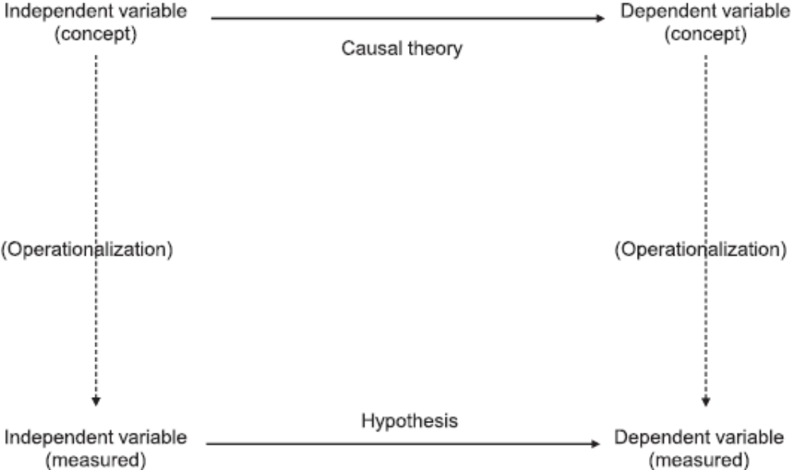
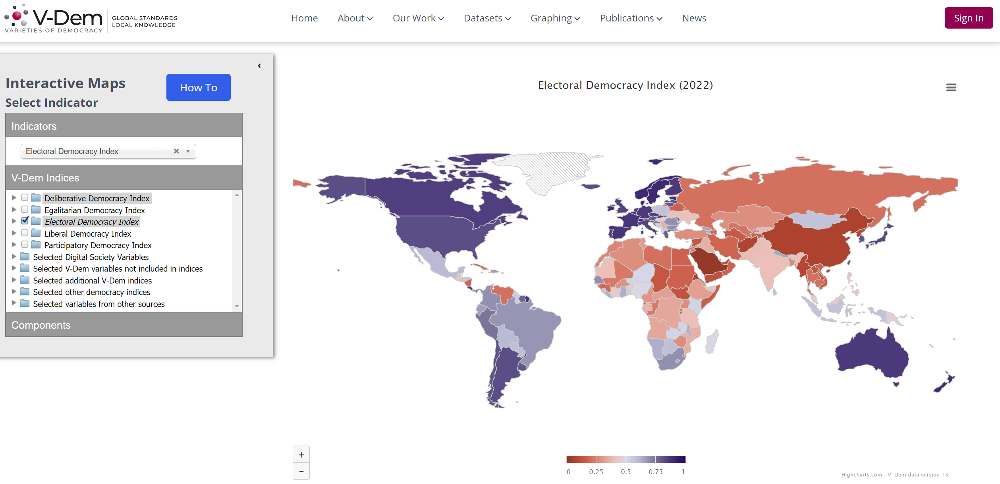
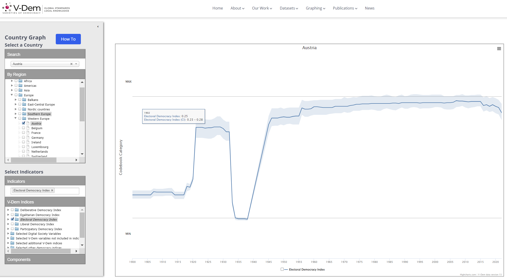

Week 6
University of Mannheim
November 15, 2023
Measurements
Based on Chapter 5 - Kellstedt, P. M., & Whitten, G. D. (2018). The fundamentals of political science research. Cambridge University Press.
⏸️ 5 minute break: Get some fresh air, …
Data collection
Any questions?
⏸️ 15 minute break:
Get some fresh air, breakfast, a coffe, …
❔ Also: time for questions
4 groups, 10-12 minutes of presentation, 15 minutes of discussion
Prepare a powerpoint presentation. Send me at least an outline until November 27, 11:30 am.
Participate in discussion of other presentations
Topics can include: Democratic backsliding, the political impact of radical right populist parties, cleavage politics (e.g., young vs. old, rural vs. urban, …)
In your presentation, you should demonstrate your understanding of the materials covered so far.
Your presentation should cover the following:
Research question
Theory & research design
Expectation, causal mechanism, assumptions, scope?
Can you cross the four hurdles?
Type of research design
Measurement strategy
Possible datasets / databases
Group 1: Jakub Bieniek, Ying-Fan Chen, Maria Michelaki
Group 2: Josef Galli, Elias Latta,Bernadett Neszt
Group 3: Daniel Saath, Daniel Schatzer
Group 4: Matthias Lung, Anna-Maria Egger

Term: The concept’s name
Intension: The concept’s attributes (meaning)
Extension: The concept’s empirical scope (operationalization)
Intension: Subjective, Objective
Extension: (Objective): Education, Income, …
Measurement is a problem for all social sciences
However, sometimes it is more straightforward
Usually, it is less straightforward:
Patrick Kraft has written a great article on the gender gap in political sophistication. You can a short article summarizing his research here.
Take 10 minutes to read Patrick Kraft’s article. The article is based on his paper Women also Know Stuff: Challenging the Gender Gap in Political Sophistication published in the American Political Science Review (APSR).
As mentioned, some concepts are easier to measure than others.
However, we can address four “problems” to ensure that we have a good measurement:
Conceptual clarity
Reliability
Measurement bias and reliability
Validity
What exactly is the theoretical concept we want to measure? Let’s look at the example of income. How would you ask for income in a survey?
Problems with “What is your income?” For example:
Married couple with children and only one parent works. The other has factually an income of zero.
A student with no job but rich parents vs. a student with a job but no financial support from his or her family.
The best measure for income - and other concepts - depends on our research objective!
A measure of a concept is reliable to the extent that it is repeatable or consistent. If we apply the same measurement rules to the same case, it should produce identical results.
Example from quantitative text analysis:
We want to identify the topic of climate change in politicians’ social media posts.
We develop a coding scheme that describes when a post should be coded as climate related or not.
Multiple student assistants manually code a sample of social media posts.
Our measure is reliable when the students arrive at the same results!
The Climate Club is here! As the @G7, we founded it today with statutes emphasising its open and cooperative character. It will comprise further important countries by the next Climate Change Conference – a significant contribution to achieving the global climate targets.
— Bundeskanzler Olaf Scholz (@Bundeskanzler) December 12, 2022
#Klimaterroristen, die mit ihren Aktionen Leben gefährden, sind als solche auch klar zu benennen. Übrigens: Unser #Unwort des Jahres ist #Transformation. Ein Dauer-Kampfbegriff der #Ampel, der die Abwirtschaftung unseres Landes auf allen Ebenen wie kein anderer verkörpert. #AfD
— AfD (@AfD) January 10, 2023
.@realDonaldTrump please don’t change the (political) climate for the worse.
— Charles Michel (@eucopresident) June 1, 2017
Measurement bias describes the systematic over- or under-reporting of a variable’s values. This is a problem if we want to know the “true” values for our observations.
But: For theory testing, we would still prefer biased but reliable measures compared to unbiased but unreliable measures. Why?
We look for the relationship between two variables: Even if our measure is biased upward, we would see the same association. E.g., higher values of X ➝ lower values of Y.
Can you come up with an example?
Our measurement is valid if it accurately represents the concept that we want to measure.
This seems straightforward! But take the example of prejudice.
If you ask people if they hold prejudices against others due to their race or ethnicity, would you trust their answers?
No. We would question the validity of their responses!
We rely on multiple ways to determine if a measure is valid.
Face validity: Does the measurement measure what it is supposed to measure?
Example: Measuring age
by asking people for their birthday?
by counting their gray hairs?
Content validity: Have we included all essential elements that define our concept?
We need to be aware of all essential elements that define our concept of interest!
Example: Measuring democracy
Our measure should include the element of elections
But what about places such as North Korea?
Is our measure related to other measures based on the assumptions of our theory?
Example: Democracy & economic development
We theorize that there is a positive relationship between the concepts of democratization and economic development
Then, there should also be a relationship between our measures of democratization and economic development
One might think that a country is or is not democratic. However, we should probably think of it as a continuum.
A famous conceptualization of democracy is proposed by Robert Dahl (1971). Democracies are characterized by competitive elections and citizens’ participation
Projects measuring democracy include:


… when studying the effects of radical right populist parties on democracy? Take 10 minutes and inspect the V-Dem’s graphing tools
Main take-aways:
Theory is essential for our measurements!
The way we measure our concept of interest should be guided by our research objective!
Fielding your own survey is resource intensive. It takes time and costs money.
Therefore, we oftentimes analyze secondary data. That is, data collected by others.
It is not easy to keep the overview of datasets and databases. You will get better with this over time and when specializing on a particular field of research!
There are many efforts to make data sets more accessible to researchers. Still: Google, google, google!
If you are curious have a look at these resources:
Find replication files in the Harvard dataverse
Browse throuh thePoliSciData website to find data by subfield
Or have a look at the collection of datasets by Erik Gahner
Of course, some statistics such as GDP or unemployment rates are provided by statistical offices of countries or organizations.
For example:
Similarly, election results are published by agencies such as the Bundeswahleiter in Germany.
Measurement & data
Exercise ~ 30 minutes
Guiding questions:
Applied Methods of Social Sciences | Winter semester 2023/24 | University of Innsbruck